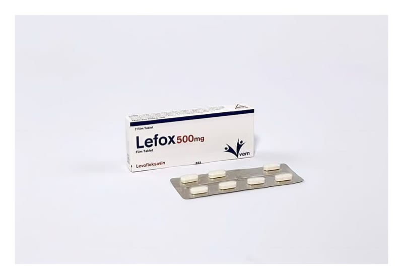

Lefox 500 mg Film Tablet, 7 Adet

Ne için kullanılır
KT · Bölüm 1LEFOX tablet ağızdan alınır. İlacınızın bir kutusu içinde her biri 500 mg levofloksasin içeren 7 adet film kaplı tablet halinde PVC-PE-PVDC şeffaf/Alu blister ambalajda kullanıma sunulmuştur. Doz ayarlamasını kolaylaştırmak için tablet çentiklidir.
Bu ilacı kullanmaya başlamadan önce bu KULLANMA TALİMATINI dikkatlice okuyunuz, çünkü sizin için önemli bilgiler içermektedir. • Bu kullanma talimatını saklayınız. Daha sonra tekrar okumaya ihtiyaç duyabilirsiniz. • Eğer ilave sorularınız olursa, lütfen doktorunuza veya eczacınıza danışınız • Bu ilaç kişisel olarak sizin için reçete edilmiştir, başkalarına vermeyiniz. • Bu ilacın kullanımı sırasında, doktora veya hastaneye gittiğinizde doktorunuza bu ilacı kullandığınızı söyleyiniz. • Bu talimatta yazılanlara aynen uyunuz. İlaç hakkında size önerilen dozun dışında yüksek veya düşük doz kullanmayınız.
LEFOX bakterilere karşı etkili bir antibiyotiktir. Florokinolonlar adı verilen antibiyotik grubuna dâhildir. Bakterilerin büyümesini, çoğalmasını engeller ve bakterilerin yok olmasını sağlar. LEFOX etkin maddesi olan levofloksasine karşı duyarlı bakterilerin neden olduğu enfeksiyonların tedavisinde kullanılır.
Akut bakteriyel sinüzit, kronik bronşitin akut bakteriyel alevlenmesi için alternatif tedavi seçeneklerinin varlığında ciddi yan etki riski nedeniyle kullanılmamalıdır. Buna ilave olarak üriner enfeksiyonlarda antibiyogramla duyarlık kanıtlanması gerekmektedir.
Doktorunuz LEFOX’u sizde aşağıdaki durumlardan biri bulunduğu için reçete etmiş olabilir: • Bakterilerin neden olduğu yüz kemiklerinin içindeki hava boşluklarının akut iltihabı (sinüzit) • Kronik bronş iltihabının akut alevlenmesi • Toplumdan edinilmiş zatürre (pnömoni) • İdrar yolları ve böbrekte gelişen iltihap (piyelonefrit) dâhil, komplikasyonlu böbrek ve idrar yolu enfeksiyonları • Prostat iltihabı • Deri ve yumuşak doku enfeksiyonları: Apse (irin kesesi), selülit, furonkül, impetigo (derinin bulaşıcı, yüzeysel, mikrobik enfeksiyonu), piyoderma (irinli deri enfeksiyonu), yara enfeksiyonlarının neden olduğu komplikasyonsuz deri ve deri ekleri enfeksiyonları • Havaya karışmış şarbon mikrobuna maruz kalma